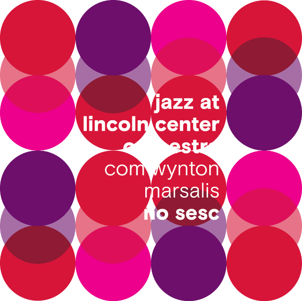

imagens
images
mídia
media
identidade visual
visual identity
divulgação
publicity

confira o relatório
imagens/
images
veja todas as fotos
saiu na mídia/
media
JLCO na mídia
identidade visual/
visual identity
Livreto Jazz
Livreto CCM
todas as publicações
publicidade /
advertising
todos os anúncios